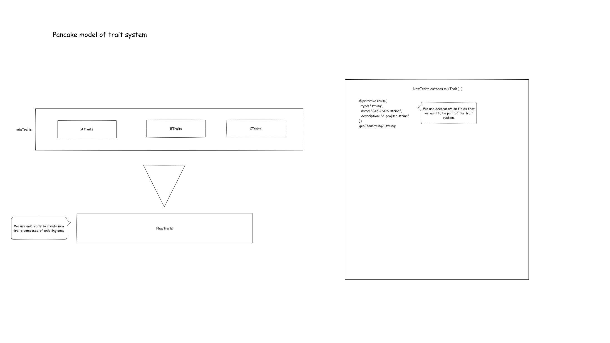
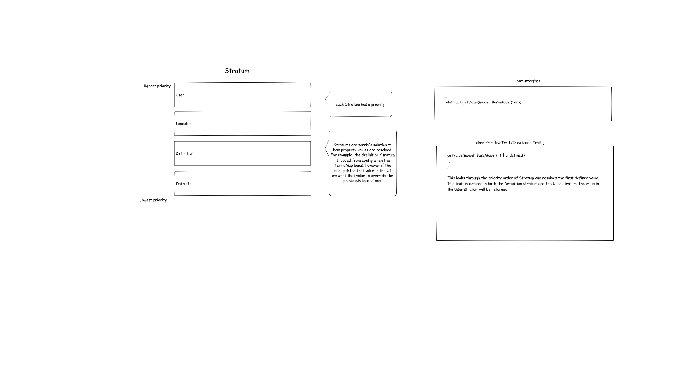
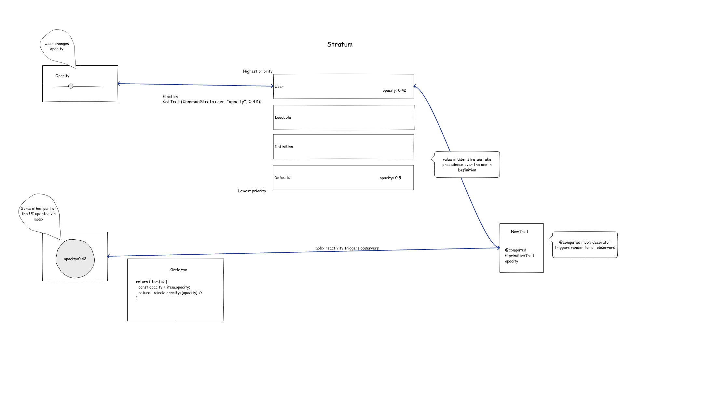

Traits in Depth
The Traits system is Terria's way of managing a priority order for state. For example, we might have a default opacity property from a config file that should be overriden by a user provided value. This article will go through how Traits are made, how the priority system works and how updates happen in the UI.
Making Traits

For base traits such as BaseMapsTraits, we extend ModelTraits. However when composing multiple traits, we use the mixTraits function. For example, ArcGisTerrainCatalogItemTraits is composed out of UrlTraits, MappableTraits, CatalogMemberTraits.
When creating a new property within a Traits class, we use decorators to ensure that the field takes part in the Traits system.
Stratum order model

Stratums are how Terria determines which value a Trait should resolve to.Strata types
There are 4 strata types
- Defaults
- Loadable
- Definition
- User
Each type can have multiple strata - see StratumOrder.ts
Common strata
There are 5 common strata - these exist for every model
- Defaults
default- Definition
underridedefinitionoverride- User
user
Defaults defaults
This is the lowest priority stratum best thought of as a sensible fallback value. For example opacity (in OpacityTraits.ts)
@primitiveTrait({
type: "number",
name: "Opacity",
description: "The opacity of the map layers."
})
opacity: number = 0.8;
These should only be used in Trait definitions.
Definition underride
underride values can be used to "override" the default stratum values - but not definition values. It can be thought of setting a new "default" value for a Trait - as default stratum shouldn't be changed.
Some example usages of underride
- Copying
itemPropertiesByIds,itemPropertiesByType,itemProperties, to nested groups or nested references - that is, when a group or reference is loaded, if there are nested groups or nested reference - they will get the parentitemProperties*set in theirunderridestratum - Setting
isExperiencingIssues = truefor models which have configuration issues
Definition definition
Values provided when a model is created. This takes higher priority than defaults and underride.
Use case 1 - Init file
Values from initialization files. For example a WMS item with opacity = 1.
{
"catalog": [
{
"type": "wms",
"name": "A WMS layer",
"url": "some-wms-server.com/layer",
"opacity": 1
},
...
],
...
}
Use case 2 - Dynamic groups
Values for models created programmatically by dynamic groups - for example WebMapServiceCatalogGroup or CkanCatalogGroup...
Definition override
override values can be used to "override" the definition stratum values (and lower level strata).
Some use cases:
- To override invalid
definitionvalues - Apply
itemPropertiesto a model
User user
This is the highest priority stratum - it represents user-driven values. This strata should only be used for values changed by user-interaction (for example the opacity slider)
Loadable strata
Loadable strata sit between the defaults and definition strata. It represents values which are loaded from external sources - for example WMS GetCapabilities.
WebMapServiceCatalogItem uses the loadable stratum WebMapServiceCapabilitiesStratum to set configuration from the WMS server's GetCapabilities.
This includes layers, styles, legends, ...
This means that we aren't required define all this configuration manually in definition (eg init files) - as sensible values can be computed based on GetCapabilities. But, as Loadable strata sites below definition, we can "override" these values by setting values in definition.
It is important to note that there are many Loadable strata - and models can have multiple.
What happens at runtime

To start, let's assume that we have an opacity trait with a value of 0.5 loaded through configuration. As it is loaded through configuration, it is placed within the Definition stratum.
When a user interacts with an opacity slider and sets its new value to 0.42, setTrait(CommonStrat.user, "opacity", 0.42) is invoked within an action. This triggers the computed value to be recalculated and the new value of 0.42 is picked up as the value in the User stratum has a higher priority than the Definition stratum.
As the computed value is updated, other parts of the UI that observe that value are automatically rendered again reflecting the updated value.